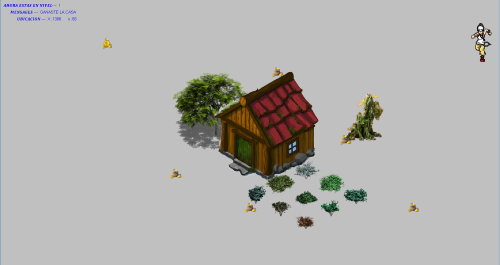

Los proyectos

Este juego lo realicé aplicando la programacion orientada a objeto, y se trata de un personaje que tiene muchos distractores, donde tiene que encontrar un tesoro.
Saber más
Este proyecto lo realicé en la universidad en conjunto con la carrera de educación diferencial, es una página web que trata de facilitar el aprendizaje de los niños de la básica a través de los juegos.
Saber más